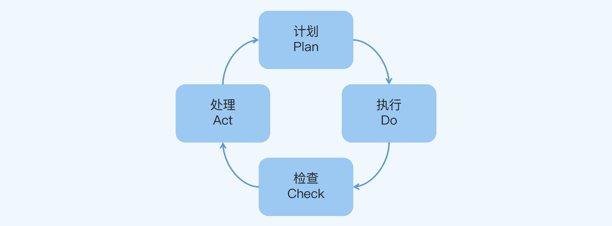
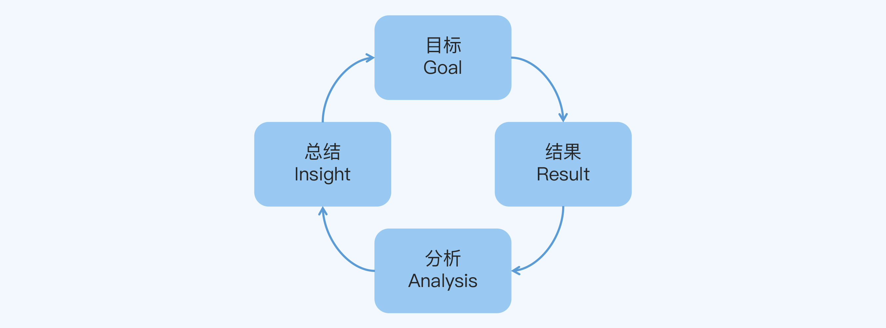
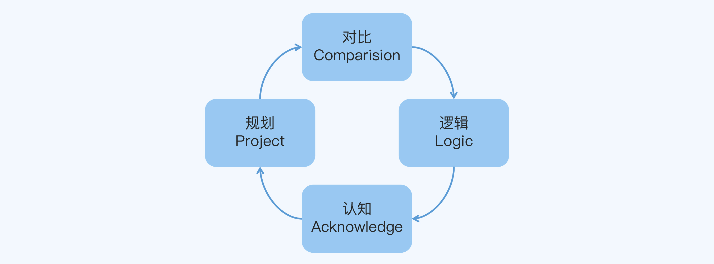
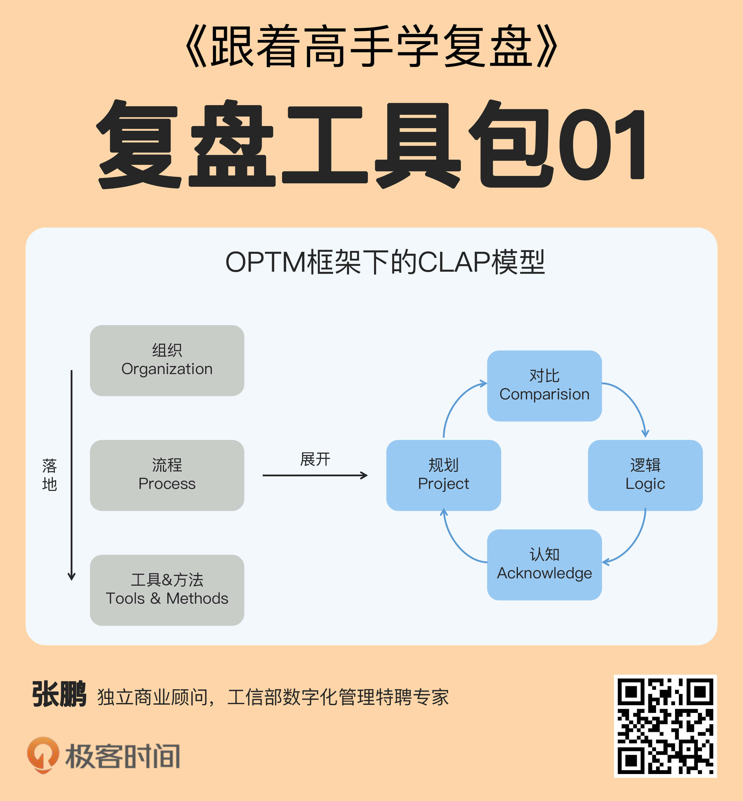

- 00 开篇词 为什么每个人都应该学会复盘？.md.html
- 01 CLAP模型：一个优秀的复盘模型是什么样的？.md.html
- 02 OPTM框架：怎么使用CLAP模型？.md.html
- 03 教练技术：怎么做复盘才能化解冲突？.md.html
- 04 制度和文化：怎么营造复盘环境？.md.html
- 05 三角法：怎么组建复盘团队？.md.html
- 06 MECE原则：怎么准备复盘资料？.md.html
- 07 五步法：如何召开一次高效的复盘会议？.md.html
- 08 事实比较：如何快速比较目标与结果？.md.html
- 09 分析原因：梳理逻辑时怎样找到切入点？.md.html
- 10 洞察规律：怎样更新认知才能找准发力点？.md.html
- 11 OKR：怎样根据复盘结论制定计划？.md.html
- 12 Double Check：怎么检查评估一次复盘的效果？.md.html
- 13 案例导学：我是怎么帮助企业做复盘的？.md.html
- 14 战略升级：5年增长100倍的跨境电商做对了什么？.md.html
- 15 业务关键点：改进一个点业绩增长50%？.md.html
- 16 组织结构设计：变动一个职位，就能带来100万_月的增量吗？.md.html
- 17 高效赋能：怎么建立流程才能把人效提升3倍？.md.html
- 18 人才培养：怎么把人才转化成实际生产力？.md.html
- 19 预算制定：人头和财务预算到底怎么定？.md.html
- 春节荐书（一）《原则》：在不确定中找到确定.md.html
- 春节荐书（二）《人类简史》：故事的力量.md.html
- 结束语 复盘，见天地见众生见自己.md.html
- 捐赠
01 CLAP模型：一个优秀的复盘模型是什么样的？
你好，我是张鹏。
在这门课程的第1讲，我想跟你一起探讨一个问题：一个优秀的复盘模型是什么样的？
为什么要学复盘模型
你可能会想：“学会一些技巧不就能做复盘了吗，为什么还要费时费力地学模型呢？”
首先，技巧虽然可能很管用，但却是零散的，而模型是体系化的，所以掌握了模型，你就不容易遗漏关键环节，考虑问题会比较周全。
其次，技巧虽然可能很巧妙，但是往往对使用条件有要求，而模型的通用性比较强，所以掌握了模型，你就不容易突然傻眼，哪怕遇到少见的、复杂的情况，也能不慌不忙地应对。
复盘模型，就相当于出门前“伸手要钱”（身份证、手机、钥匙和钱包）的口诀，解数学方程的万能公式，你说重不重要呢？
复盘常见的模型
不过，模型本身也有高下之分。在开篇词中我提到过，复盘的目的是对未来的优化，所以一个模型到底好不好用，就要看它帮助我们做优化的能力怎么样。
带着这样的思路，我先介绍两个常见的复盘模型，看看它们是怎么做优化的。
模型一：PDCA（Plan-Do-Check-Act）
第一个模型是PDCA模型，它是美国质量管理专家休哈特（Walter A. Shewhart）提出的，后来因为另一位美国质量管理专家戴明（William Edwards Deming）的宣传推广而得到普及，所以又叫戴明环。
PDCA这4个字母分别代表4个环节：
- Plan（计划）：制定目标和计划。
- Do（执行）：展开任务、组织实施。
- Check（检查）：检查过程中的关键节点和最终结果。
- Act（处理）：处理检查结果，肯定成功的经验，纳入标准流程；总结失败的教训，引起重视；对于没有解决的问题，提交到下一次PDCA循环中去解决。
整个模型的运行过程如下图所示：

其中最核心的部分是Check检查环节和Act处理环节，这两个环节要审视工作完成情况，总结经验教训。
PDCA的优化体现在对具体做事标准的修订，比如技术标准、管理制度和财务规范等，常见易错点可以整理成Checklist，行之有效的方法可以固化到流程中。PDCA每循环一次，做事的标准就验证或优化了一次。
这也跟它的历史起源有关，因为最早它是用来做质量管理的，就是要狠抓品控，“死磕”标准，精益求精。
使用PDCA的典型代表就是诺基亚（Nokia）公司了。从20世纪90年代到21世纪的前10年，诺基亚可以说引领了手机行业的发展，在行业内是无敌的存在。
你可能没有用过诺基亚的手机，但你一定听过“诺基亚手机可以砸核桃”的段子，江湖上甚至流传着“诺基亚手机挡子弹”的传说。这些质量品控方面的口碑，就有PDCA的功劳。
直到3G时代初期，诺基亚仍然是手机行业的老大，当时在通信质量、制作成本和可靠性等方面都比初代iPhone做得更好。
那么问题来了，既然PDCA这么管用，为什么诺基亚会在后面的竞争中一败涂地呢？
这就要说到PDCA模型的局限性了。刚才我们提到，PDCA的优化体现在修订具体做事的标准，这也意味着它缺乏对业务战略的调整机制。
换句话说，PDCA只会教你实现目标，不会教你调整目标；只会告诉你怎么把事情做好，不会告诉你是不是该做别的事情了。
诺基亚的确能把手机做好，但是苹果公司的iPhone却重新定义了手机。
所以PDCA模型比较适合工业化时代。工业化时代的特点是，市场需求和竞争对手基本上都是确定的，比的是质量、成本和效率等传统核心价值。
但是当今社会已经逐渐步入后工业化时代，又叫VUCA时代，因为它的特点包括易变性（Volatility），不确定性（Uncertainty），复杂性（Complexity）和模糊性（Ambiguity）。
一个具体表现就是，市场需求要靠自己去发掘和创造，我们甚至连自己的竞争对手是谁都不知道。
质量、成本和效率，这些当然还是很重要，但是这方面的能力早已经不是决胜能力，而只是必备的基础能力。在这个时代，洞察和满足用户需求的能力，或者说面向用户创造价值的能力，才是企业的核心竞争力。
相应地，一个优秀的复盘模型就要能够分析需求、调整目标，今年行，明年行，而且五年十年以后还能行。
模型二：PDF（Preview-Do-FuPan）
第二个模型是PDF模型，它是由联想集团创始人柳传志引入做事过程中的，所以也叫柳传志环。
PDF这3个字母分别代表3次行动：
- Preview（沙盘推演）：在做事之前把所有的可能性推演一遍，找出最佳方案。
- Do（执行）：具体的方案落地执行。
- FuPan（复盘）：事后对做过的事情进行复盘。
很多人第一次看到PDF模型的时候，会觉得它跟PDCA模型很像：Preview就是Plan，Do和Do完全一样，FuPan就相当于Check和Act。
其实这是不对的，两个模型完全不是一回事。PDCA是把一件事情分成4个环节来做；而PDF是把一件事情重复做3次，其中第1次的沙盘推演和第3次的复盘是虚拟地做，只有第2次执行是实际地做。
我们重点关注的是PDF模型的复盘部分，它可以分为4个环节，运行过程如下图所示：

- 目标：当初设定的目标是什么，设定目标的原因是什么。
- 结果：对照目标评估现在的工作成果，是完成了，没有完成，还是部分完成。
- 分析：通过不停地追问，找到成功或失败的根本原因。
- 总结：继续深挖成功的经验或失败的教训。
其中最核心的部分是分析原因和总结规律，并且在实际应用中，规律还要经过其他案例验证从而避免偶然性的因素，这是一个非常了不起的发现。
PDF的优化体现在对业务战略的调整，比如销售模式、盈利模式和目标客群等，可以根据行业趋势、竞品策略和用户需求等因素来灵活调整，适应变化。
2002年，戴尔在中国的PC市场异军突起，联想的市场份额急剧下降。
于是联想集团内部组织了复盘。因为联想采用的是分级代理分销模式，而戴尔采用的是直销模式，拥有低库存、去中间商和按需定制等优势，所以一开始的时候，很多人都认为份额下降的原因是“直销模式比分销模式好”，结论是要变更销售模式。
但是核心高层经过周密的推演得到一条关键的战略洞察：与戴尔的竞争，本质上是组织效率和客户价值感受的竞争。所以后来的结论是：
第一，针对内部沟通成本太高、决策流程固化和反应慢的问题，将结构扁平化，把全国7个大区重组为18个分区，决策权进一步下放，从而更高效地响应市场。
第二，针对戴尔的直销优势，把销售模式调整为直销与分销结合，针对个人客户采用直销模式，针对大客户和企业客户，采用增值服务更好的的分销模式。
最终，联想在一年之内夺回了丢失的市场份额。直到2020年，联想在全球和中国的PC市场份额都名列前茅，稳居行业前两名。
那么问题又来了，既然PDF模型这么管用，为什么联想的手机业务却做不起来呢？
要知道，中国国产手机市场也曾有过“中华酷联”（中兴、华为、联想和酷派）的时代，现在却变成了华为、OPPO、VIVO和小米的天下。
这说明，PDF模型也有它的局限性。虽然PDF提出了一个很好的思路，但是因为缺乏颗粒度更细的流程和标准，所以它严重依赖复盘者的个人能力，可复制性不强。
也就是说，这个人成功了，换一个人不一定成功；甚至这个人这次成功了，下一次也不一定成功。
事实上，PDF模型要想用出效果，复盘者不但要有摸爬滚打多年的行业经验和跨部门跨领域的大局观，因为这样才能洞察到业务问题的关键；也要得到老板充分的支持和信任，因为这样才有魄力去否定大部分人的错误认知，才有底气去坚持自己的看法。
但是这样的人和这样的机会注定是非常稀缺的，而且在VUCA时代会更加稀缺。
因为VUCA时代特点的另一个具体表现就是，市场碎片化和用户碎片化。
自上而下的业务规划和指令传达当然还是很重要，但光靠这一点已经很难完全满足用户的需求。在这个时代，让更多的员工能直接参与到洞察和满足用户需求的过程中来，同样是企业的核心竞争力。
于是现在企业趋向于结构扁平化和服务多元化。层级变少了，高管变少了，束缚也变少了；但是虚拟团队或行动小组变多了，独立负责一小块业务的人变多了，基层的能量得到更大限度的发挥。
相应地，一个优秀的复盘模型，要能够让更多的普通人用出效果、互相赋能，我用我行，你用你也行，不但自己行，还带动团队和公司一起行。
CLAP模型
分析到这里，我想起了达尔文的一句关于进化的名言：“能够生存下来的物种，并不是那些最强壮的，也不是那些最聪明的，而是那些能对变化做出快速反应的。”
其实，复盘的本质就是进化，复盘能力就是适应环境变化的能力。在VUCA时代，环境的变化更快、更复杂、更模糊、更加充满不确定性，所以企业更加需要复盘，也需要更多的人来参与复盘。这也对复盘模型提出了很高的要求。
基于开篇词对复盘目的的解读和这一讲对复盘模型的分析，我构建了一个CLAP模型。CLAP这4个字母，分别组成一次循环的4个环节，如下图所示：

- 对比（Comparison）：陈述结果，和最初设定的目标进行对比，也就是对事实的总结。
- 逻辑（Logic）：梳理逻辑，解释结果和目标之间的差距，也就是对原因的分析。
- 认知（Acknowledge）：提出假设，更新对业务和用户的理解，也就是对认知的修正。
- 规划（Project）：制定改进规划，在实践中验证，也就是对未来的优化。得到的结果，又可以作为下一次循环的依据。
CLAP模型不但能优化做事细节，也能优化业务战略，从而弥补了PDCA模型的局限性。
当然，如果光是这样，CLAP模型看上去似乎和PDF模型的复盘部分并没有本质区别。
不过别着急，我在CLAP的基础上，还补充了OPTM框架。OPTM这4个字母，分别代表复盘的3个层级，如下图所示：

- 组织（Organization）层：一支专业的复盘团队，负责组织复盘行动，建设和维护流程、方法和工具，以及分享复盘结论等工作，这是人的层级。
- 流程（Process）层：一套标准的复盘流程，包括会前准备、召开复盘会议和会后执行三个阶段，具体展开就是CLAP模型，这是事的层级。
- 工具&方法（Tools & Methods）层：一系列实用的复盘工具和方法，拿来就能用，保证每个步骤都能顺利落地，这是物的层级。
CLAP模型有了OPTM的框架加持，实际应用时的颗粒度就更细了，可复制性大大提高，非核心高层的普通人也可以用出效果，互相赋能，从而弥补了PDF模型的局限性。
实际上，OPTM是英文单词Optimize的缩写，意思是优化，正好是复盘的目的。
CLAP在英文中有掌声的意思，它也是你在完成一次高质量的复盘之后会收获的东西。
那么，OPTM框架到底包括哪些具体内容，CLAP模型又要怎么使用呢？别着急，下一讲，我会用一个具体案例为你详细讲解。
小结
这一讲我们探讨了一个问题，一个优秀的复盘模型是什么样的？我先为你分析了两个常见的模型，然后向你介绍了我自己提出的OPTM框架下的CLAP模型。现在，我们回顾一下重点内容。
- PDCA模型包括4个环节，计划、执行、检查和处理，它的优化主要体现在修订具体做事标准，但是局限性在于缺乏对业务战略的调整机制。
- PDF模型的复盘部分包括4个环节，回顾目标、评估结果、分析原因和总结规律，它的优化主要体现在调整业务战略，但是局限性在于严重依赖复盘者的个人能力、可复制性不强。
- CLAP模型包括4个环节，对比、逻辑、认知和规划，它既能优化做事细节，也优化业务战略；而且在OPTM框架下，从组织、流程、工具&方法这三个层级细化了实际应用时的颗粒度，提高了可复制性。
思考题
这就是今天的全部内容，最后留一道思考题给你吧。你或者你所在的团队之前是怎么做复盘的呢？学完这一讲，你觉得以前的复盘方式有什么优缺点？
欢迎你把答案写到留言区，和我一起讨论。
© 2019 - 2023 Liangliang Lee. Powered by gin and hexo-theme-book.